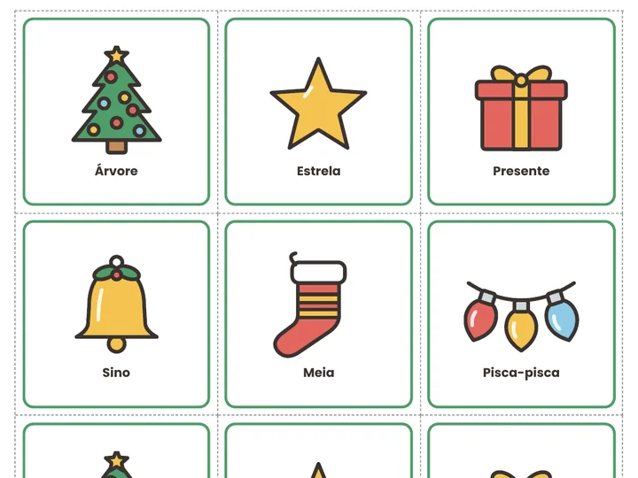
Jogo da Memória Natalina
24 cartas · 12 paresVire duas cartas e encontre os pares. Tem verso opcional para imprimir e uma versão mais fácil, só com 6 pares.
checkoutUrl em config.js para os botões irem ao checkout.9 jogos e atividades para divertir as crianças nas confraternizações e nas atividades de Natal, em casa ou na escola.
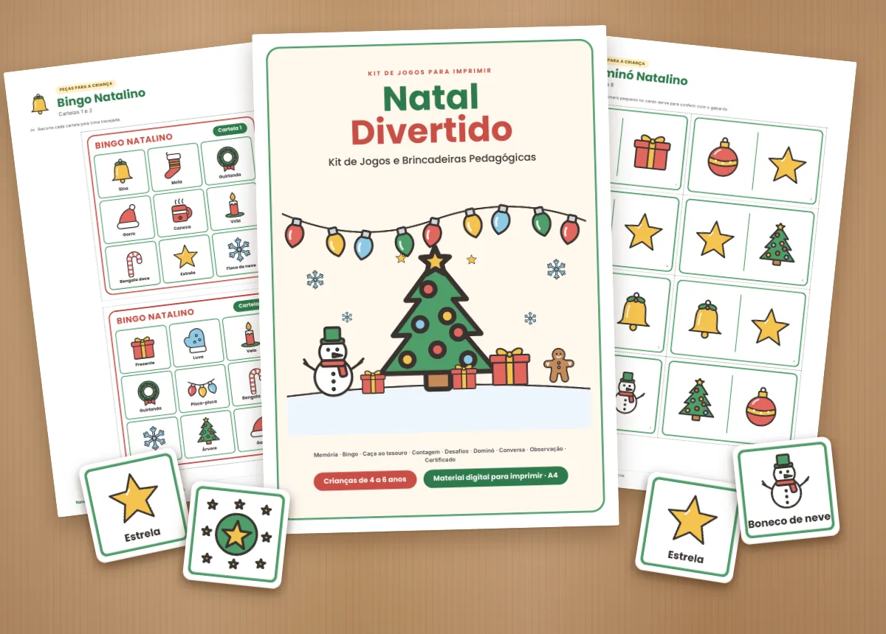
Produto digital em PDF para imprimir em A4. Nada é enviado pelo correio.
Cada jogo vem com as peças prontas para recortar e uma página de instruções para o adulto. As imagens abaixo são das páginas do kit.

Vire duas cartas e encontre os pares. Tem verso opcional para imprimir e uma versão mais fácil, só com 6 pares.
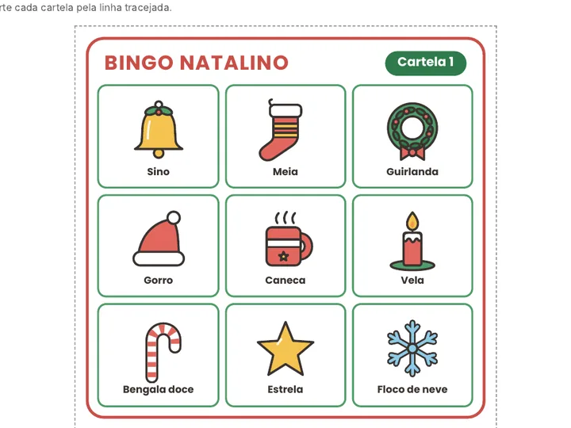
O adulto sorteia uma figura e as crianças marcam na cartela. Funciona com quem ainda não lê, porque o jogo é pelo desenho.
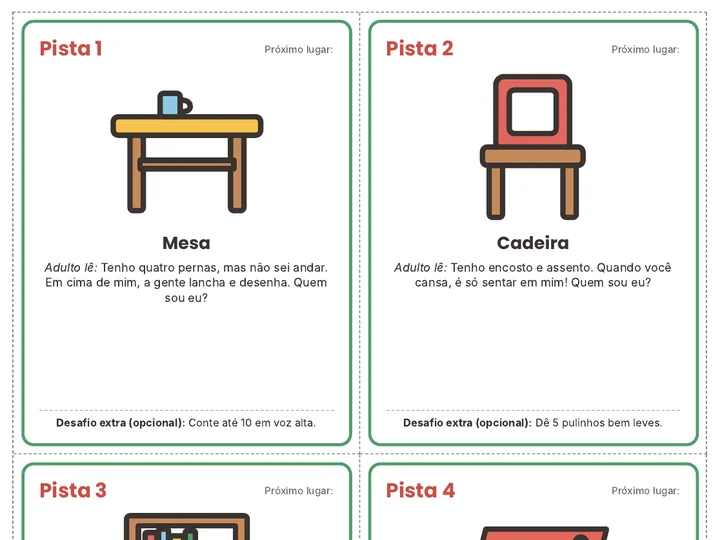
Cada pista mostra o próximo lugar (mesa, cadeira, estante...) e traz uma adivinha. A última leva ao tesouro. Não precisa de árvore de Natal.
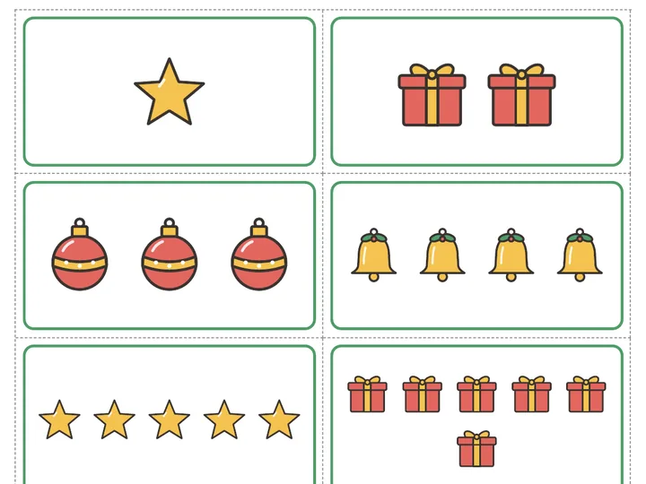
A criança conta as figuras e junta cada carta ao número certo, de 1 a 10. Inclui variação de contagem oral para os menores.
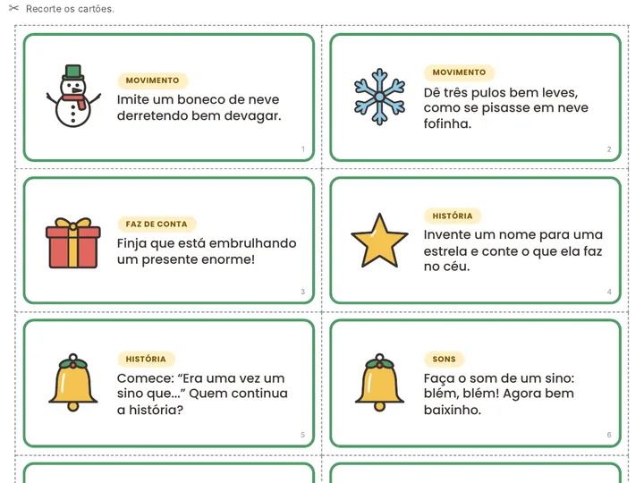
Sorteie um cartão e todos participam: imitar, inventar histórias, fazer sons, procurar objetos e trabalhar em equipe.
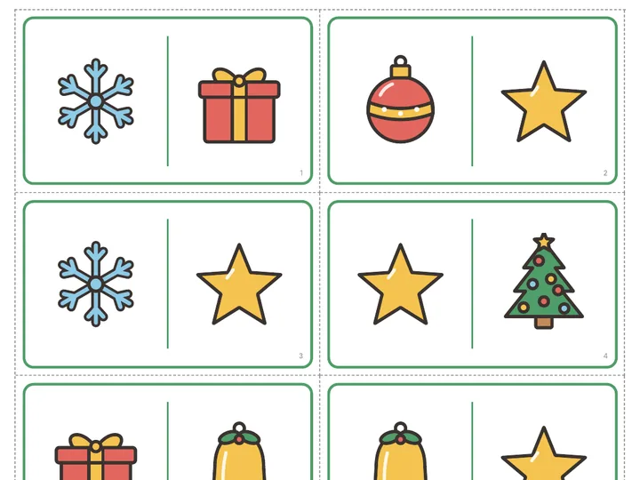
Encaixe figuras iguais nas pontas. Regras para 2 a 4 pessoas e uma versão cooperativa em que o grupo fecha o círculo junto.
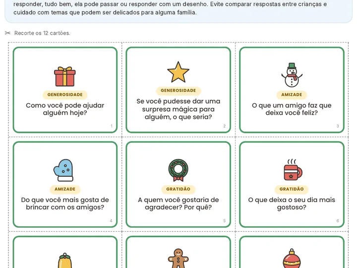
Perguntas abertas sobre amizade, gratidão, cooperação e imaginação, com dicas para o adulto acolher todas as respostas.
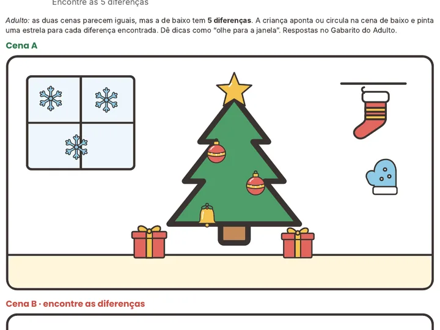
Uma sala enfeitada para observar e contar, e duas cenas para encontrar as 5 diferenças. As respostas estão no gabarito.
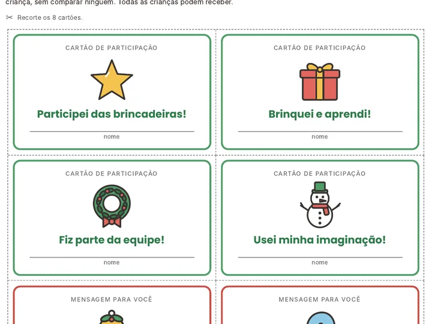
Cartões de participação e mensagens positivas para entregar no fim das brincadeiras, mais um certificado para preencher.
R$ 14,90 · PDF para imprimir
Você vai precisar de uma impressora (colorida ou preto e branco) ou de um serviço de impressão, como uma papelaria. A impressão não está incluída.
23 páginas do kit, do jeito que você vai imprimir. Toque em uma página para ampliar.
Arraste para o lado para ver mais páginas
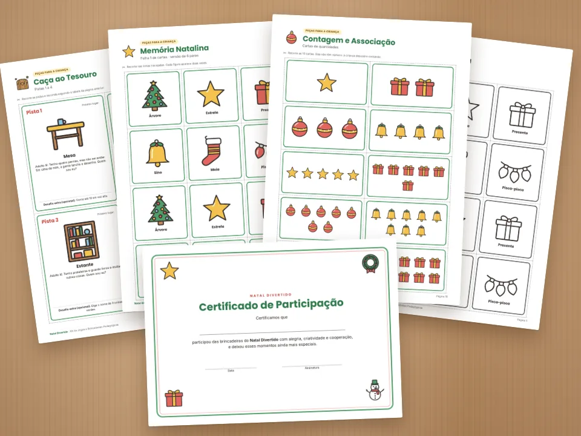
Você será levado à página de pagamento.
É um produto digital: arquivos em PDF para você imprimir. Nada é enviado pelo correio.
O acesso aos arquivos em PDF é liberado pela plataforma de pagamento depois que a compra é confirmada.
Você recebe 3 arquivos: a versão colorida (31 páginas), a versão econômica em preto e branco (31 páginas) e o Gabarito do Adulto (4 páginas).
Sim. O material foi feito para imprimir em papel A4, em impressora comum. Se não tiver impressora em casa, você pode levar o arquivo a uma papelaria ou gráfica rápida.
Para memória, dominó, bingo e contagem, o guia recomenda papel mais firme (120 a 180 g/m²) ou colar a folha em papel-cartão.
Não. O kit traz uma versão econômica em preto e branco, com os desenhos em linha para a criança colorir antes de jogar.
Imprima, recorte nas linhas tracejadas (o guia recomenda que o adulto faça os recortes) e siga a página de instruções de cada jogo, com preparação, regras e variações. A caça ao tesouro leva cerca de 10 minutos para esconder as pistas.
Para crianças de 4 a 6 anos. Vários jogos têm uma versão mais fácil para os menores e desafios extras para os maiores, e as figuras trazem o nome escrito embaixo, mas os jogos funcionam pelo desenho.
Sim. Você pode imprimir quantas cópias precisar para usar em casa, nas suas turmas, em festas de encerramento e em encontros com crianças.
Só não é permitido revender ou compartilhar o arquivo digital.
A ordem das pistas da caça ao tesouro, a conferência das cartelas do bingo, as respostas da contagem, uma sequência completa do dominó e as respostas dos desafios de observação. Ele vem separado para as crianças não verem as respostas antes.